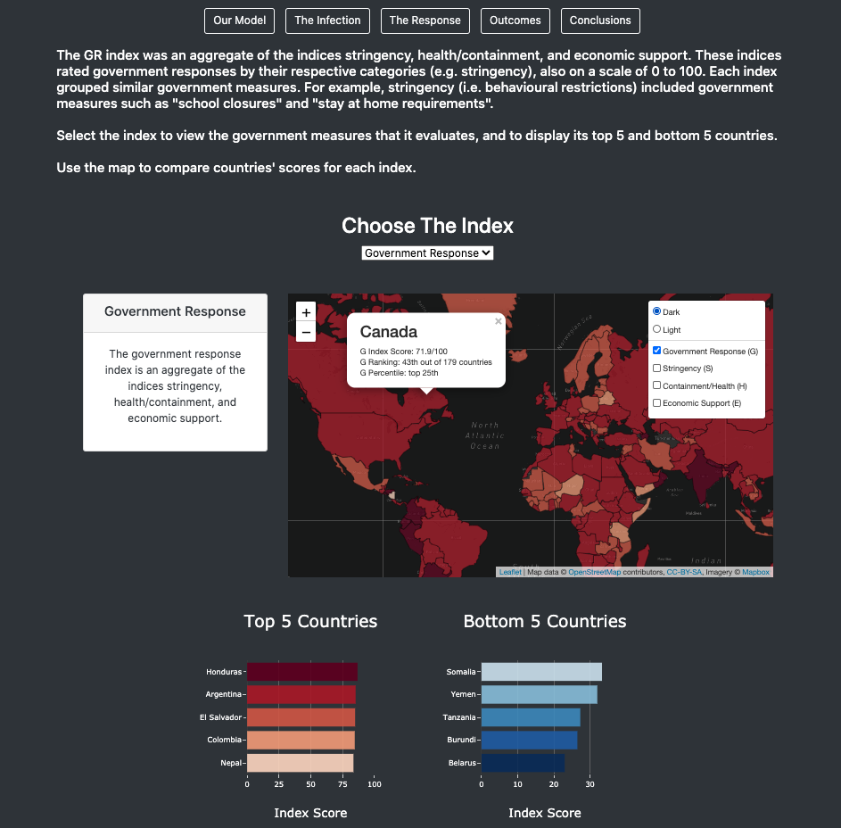

I love to make sense of chaotic data and tell stories with intuitive visuals. Regardless of the field of work (public policy, business/finance, or academia), my purpose is to help people make informed decisions.
I am a data analyst with a healthcare background but I also aspire to gain work experience in public policy, business, finance, and academia. I enjoy analyzing data to gain insights, and I advocate for data-informed decision-making. I believe my work can be used to, ultimately, improve people’s quality of life, and hope to thereby make an impact on my community. My skills include use of Python, JavaScript, SQL, pgAdmin, MongoDB, Flask, web scraping (Chrome Developer Tools, Splinter, and Beautiful Soup), machine learning, HTML5, CSS3, Git, Jupyter Notebook, Visual Studio Code, RStudio, Tableau, Amazon Web Services (AWS), Visual Basic for Applications (VBA), and Excel. My enthusiasm for self-directed learning, readiness to apply skills in novel settings, and reliability would make me a valuable addition to your team!
Python
JavaScript
HTML5
CSS3
Git
Data Analytics Boot Camp Certificate
Pathology Residency (4 Years Experience)
Doctor of Medicine (M.D.)
B.S. in Biochemistry
An interactive web page about COVID-19. The page displays supervised machine learning predictions for numbers of cases and deaths and an analysis of international government responses for preventing the spread of COVID. Python, JavaScript, HTML5, CSS3, SQLite, Jupyter Notebook, and libraries (scikit-learn, TensorFlow, Plotly.js, and Leaflet.js) were used.
